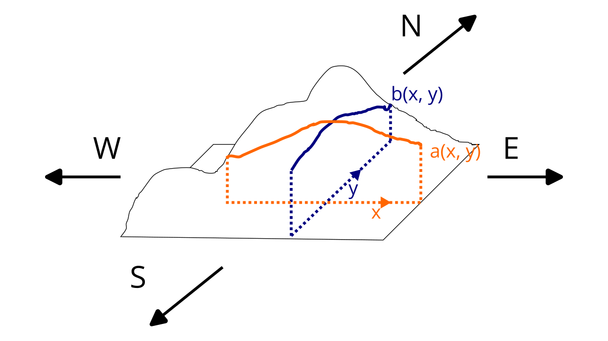

Multivariable calculus#
“Give me a lever long enough and a fulcrum on which to place it, and I shall move the world.”
Archimedes
Within the first hundred years of the invention of calculus, Newton and Leibnitz had already pushed single-variable calculus to its limit. A new generation of mathematicians had cropped up, ones who yearned to push the envelope of calculus, extending it to multivariable functions. Multivariable calculus allowed for physics, then in its infancy, to finally flourish, bringing with it our modern understanding of the world. And so it is invaluable that we explore this critical tool in the physicist’s toolbox, and follow in the footsteps of Lagrange and Euler; seeing further, “standing on the shoulders of giants”.
Prerequisites for multivariable calculus#
Parametric Equations#
Parametric equations are equations where \(x\) and \(y\) are functions of a parameter \(t\). For instance, the following is a parametric equation:
Note that \(x^2 + y^2 = \sin^2 (t) + \cos^2 (t) = 1\), so this is the parametric equation of the unit circle, as we will confirm below:
import sympy as sp
import numpy as np
import matplotlib.pyplot as plt
from sympy.plotting.plot import *
sp.init_printing()
def plot_p2d_example():
t = sp.Symbol("t")
plt = plot_parametric(sp.sin(t), sp.cos(t), show=False, aspect_ratio=(1.0, 1.0))
plt.show()
plot_p2d_example()
The same concept can be generalized with a 3D parametric equation:
def plot_p3d_example():
t = sp.Symbol("t")
plt = plot3d_parametric_line(sp.sin(t), sp.cos(t), t, show=False)
plt.show()
plot_p3d_example()
Monovariable calculus#
The derivative of a monovariable function is defined as:
The indefinite integral of a function is the inverse operation of the derivative:
And is defined by:
Definite integrals are the (signed) area under the curve of a function, and can be evaluated by the fundamental theorem of calculus:
Partial Derivatives#
If you were travelling along a mountain, you would notice something interesting. Let’s assume you take two journeys across the mountain, measuring the height of the mountain as you go. If you walk strictly from east to west of the mountain, you find that the rate of change of the height is given by a specific function \(a(x)\). If you then change directions and walk strictly from north to south of the mountain, then you find that the rate of change of the height is given by a different specific function \(b(y)\). Clearly these two rates of change are different.
{kind=link}
If we call the height of the mountain a function \(h(x, y)\), we would call the rate of change of the height in strictly the east-west direction (along \(x\)) is the partial derivative of the height \(h\) with respect to \(x\), which we notate with:
And the rate of change of the height in strictly the north-south direction (along \(y\)) is the partial derivative of the height \(h\) with respect to \(y\), which we notate with:
Essentially, partial derivatives take the derivative of a multivariable function with respect to one variable and leave all other variables constant. For example, take \(f(x, y) = 2x^2 y\):
Here, we treat \(y\) as a constant, allowing us to factor it out of the equation as a constant, and then we can just take the ordinary derivative of \(2x^2\). Similarly:
Here, we treat \(x\) as a constant, allowing us to factor everything in terms of \(x\) (that being \(2x^2\)) out of the equation as a constant, and then we can just take the ordinary derivative of \(1y\).
Formally, the partial derivative of a multivariable function \(f(x_1, x_2, x_3, \dots, x_i, \dots, x_n)\) is defined by:
For a two-variable function, such as \(f(x, y)\), the partial derivative with respect to \(x\) is given by:
And the partial derivative with respect to \(y\) is given by:
The multivariable chain rule for derivatives of a composite function is based on the single-variable version. For a function \(f(x, y) = (x(t), y(t))\), the derivative with respect to \(t\) is given by:
For instance, we could calculate the partial derivative of \(f(x, y) = 2x^2 y\) with respect to \(x\). Let’s say that \(x(t) = 3t^5 + 5\) and \(y(t) = 7 \sqrt{t}\). We can then calculate our derivative with respect to \(t\) like so:
The more general form of the chain rule with a multivariable function \(f(q_1, q_2, q_3, \dots, q_n) = (q_1(t), q_2(t), q_3(t), \dots, q_n(t))\) is given by:
And if both the outer and inner functions are multivariable:
Mixed partial derivatives#
Second partial derivatives are denoted by \(\frac{\partial^2 f}{\partial x^2}\) or \(f_{xx}\). When using the “del” notation (with the \(\partial\) symbol) you take derivatives from right to left order.
Second partial derivatives commute, which means the order you take them doesn’t matter. Thus \(\frac{\partial f}{\partial x \partial y} = \frac{\partial f}{\partial y \partial x}\).
Scalar-valued functions#
A scalar-valued function is a function that always outputs a number for each input, not a vector, such as \(f(x, y) = 2x + 3y^2\).
Scalar field#
A scalar field is when a scalar-valued function gives the value of every point in space. An example of a scalar field could be a temperature field; then the temperature at each point \((x, y, z)\) in space is a number given by the function \(T(x, y, z)\).
Vector-valued functions#
Vector-valued functions produce a vector for each input, for instance:
Note that vector-valued functions can have components that are functions of \(x, y, z\), or functions of \(t\), in which case its components are parametric functions.
The derivative of a vector-valued function is another vector in all cases. For example, velocity is often given by a vector-valued function where:
Speed is given by the norm of the velocity function:
If the vector-valued function is of one variable, e.g. \(\vec v(t)\), then its derivative is a regular derivative \(\frac{d \vec v}{dt}\) that is a vector. If the vector-valued function is of several variables, e.g. \(\vec v(s, t)\), then it has one partial derivative for each variable, e.g. \(\frac{\partial \vec v}{\partial s}\) and \(\frac{\partial \vec v}{\partial t}\), and each of those partial derivatives is also a vector.
Vector field#
A vector field is when a vector-valued function gives the value of every point in space. An example of a vector field could be a wind velocity field; then the wind velocity vector at each point \((x, y, z)\) in space is a number given by the function \(\vec W_v(x, y, z)\).
Div, Grad, Curl#
The gradient of a multivariable function takes scalar-valued function (or more generally scalar field) and produces a vector field. The vector produced follows 2 attributes:
Its direction is in the direction of greatest increase
Its magnitude is proportional to the steepness (rate of increase)
In Cartesian coordinates, the gradient of a function \(f(x, y)\) is defined using the nabla (\(\nabla\)) symbol as follows:
For example, let’s take the gradient of \(f(x, y) = x^2 - y^2\). The gradient at each point \((x, y, z)\) would be then given by:
Or more generally, of a function \(f(q_1, q_2, q_3, \dots, q_n)\):
To intuitively understand the gradient, take a look at the graph of \(f(x, y)\):
def plot_fxy():
x, y = sp.symbols("x y")
f = x ** 2 - y ** 2
plot3d(f)
plot_fxy()
Let’s now take a look at its gradient:
def gradient(f):
x, y = sp.symbols("x y")
return (f.diff(x), f.diff(y))
def plot_vecfield(g, description):
x, y = sp.symbols("x y")
xrange = np.linspace(-3,3,15)
yrange = np.linspace(-3,3,15)
X,Y = np.meshgrid(xrange, yrange)
U=X
V=Y
for i in range(len(xrange)):
for j in range(len(yrange)):
x1 = X[i,j]
y1 = Y[i,j]
U[i,j] = g[0].subs({x:x1, y:y1})
V[i,j] = g[1].subs({x:x1, y:y1})
plt.quiver(X,Y,U,V, linewidth=1)
plt.title(description)
plt.show()
def fxy_plt_vecfield():
x, y = sp.symbols("x y")
f = x ** 2 - y ** 2
g = gradient(f)
plot_vecfield(g, "Gradient of $f(x, y) = x^2 - y^2$")
fxy_plt_vecfield()
Note how the vectors all point outwards from the center towards the “hills” of the function, the direction of greatest increase.
The directional derivative is built on the gradient and gives the rate of change of a function with respect to any direction \(\vec v\), rather than just the \(x, y, z\) directions. It is defined as follows:
Note
Remember that this is a dot product, not just multiplication! The output of the directional derivative has always to be a scalar function!
This means that given a vector \(\langle a, b \rangle\), then the directional derivative at a point \((x, y)\) is given by:
We cannot take the gradient of a vector field. However, there are two other operations we can do on a vector field - they are the curl and divergence, notated as follows:
The divergence is defined as follows:
The divergence can be thought of as describing fluid flow - if the divergence is positive, fluid is flowing outwards, whereas if the divergence is negative, fluid is flowing inwards.
Meanwhile, the curl, a measure of fluid rotation, is defined much like the typical cross product:
Which, when expanded out, results in:
Note
Note that the center term of the curl using the normal cross product formula is actually \(-\left(\frac{\partial F_z}{\partial x} - \frac{\partial F_x}{\partial z}\right)\), which we just distributed the negative sign to get \(\frac{\partial F_x}{\partial z} - \frac{\partial F_z}{\partial x}\)
The Laplacian operator is the gradient of the divergence of a scalar field, given as follows:
Multiple integrals#
We are already familiar with the idea of an integral along a single-variable function \(f(x)\):
Here, we are adding thin slices of width \(dx\) and height \(f(x_i)\) to find the area under the curve of \(f(x)\). We can generalize this to two-variable functions \(f(x, y)\):
This is called a double integral, and it finds the volume under the surface \(f(x, y)\) by adding thin cubes of area \(dA\) and height \(f(x_i, y_i)\) within the bounds \(R\).
To evaluate double integrals, we use a similar process as partial derivatives: we integrate first with respect to \(y\), then with respect to \(x\):
For example, let’s evaluate:
This becomes:
Let’s first evaluate the inner integral. Treating everything that doesn’t contain \(y\) as constant, we have:
Here we integrated \(6xy^2\) with respect to \(y\), then substituted the resulting \(y\)’s in the answer for the bounds of integration. Now, let’s plug this into our second integral:
The same procedure is true for triple integrals over a region \(f(x, y, z)\), where we find the volume under a 4-dimensional surface by adding thin 4D regions of volume \(dV\) and height \(f(x_i, y_i, z_i)\):
Line integrals#
Similar to integrals over a 1D line, 2D area, or 3D volume, we can take integrals over a curve - these are called line integrals. There are two types of line integrals - ones over scalar fields, and ones over vector fields. Line integrals over scalar fields take the form:
They can be evaluated with:
Or in the 3D scalar field case:
For example, we can evaluate the line integral, with a curve \(C\) with endpoints \((1, 2)\), and \((4, 7)\) (source):
To do this, we must parameterize \(C\) with two parametric equations:
This means that at \(t = 0\), \(C = (1, 2)\), and at \(t = 1\), \(C = (4, 7)\). We now take their derivatives:
We now subsitute into the equation for scalar 2D line integrals:
The main application for scalar line integrals is to calculate the mass, moment of inertia, and center of mass of a wire. However, vector line integrals are far more common, and in many cases, far more useful.
Line integrals over vector fields take a different form. They look like this:
And are evaluated with:
Note that the dot is not multiplication, but a dot product. In evaluating a line integral over a vector field, both \(\vec F\) and \(\vec r(t)\) must be known to solve.
The main application of vector line integrals is in various physical laws - for example, the work done by a vector field \(\vec F\) (such as a gravitational or magnetic field) on a particle that travels along the curve \(C\) through that field is given by a vector line integral:
Meanwhile, the integral forms of two of Maxwell’s equations all use vector line integrals. For example, Ampère’s law states that the line integral of a magnetic field \(\vec B\) is proportional to the enclosed current:
Note that here, we use a special symbol to denote that the curve \(C\) enclosing the magnetic field is closed. Additionally, the more generalized version of Ampère’s law is slightly more complex:
Additionally, Faraday’s law states that the line integral of an electric field \(\vec E\) is proportional to the rate of change of the magnetic flux:
Surface integrals#
Surface integrals generalize the idea of a line integral to surfaces. They can be defined over scalar fields or vector fields. I will add more to this section later. For now though, just note that they look very similar to double integrals, just the integration is of an infinitesimal portion of surface \(dS\):
The most important application of surface integrals is in the integral form of Maxwell’s equations - the first two equations extensively utilize surface integrals. Gauss’s law states that the surface integral of the electric field over a closed surface (often, a sphere) is proportional to the enclosed charge:
And Gauss’s law for magnetism states that the surface integral of the magnetic field over a closed surface is zero:
Vector calculus theorems#
There are several important vector calculus theorems. First, the divergence theorem, which relates surface and triple integrals:
Then, Stokes’ theorem, which relates surface integrals around a region and line integrals enclosing that region: